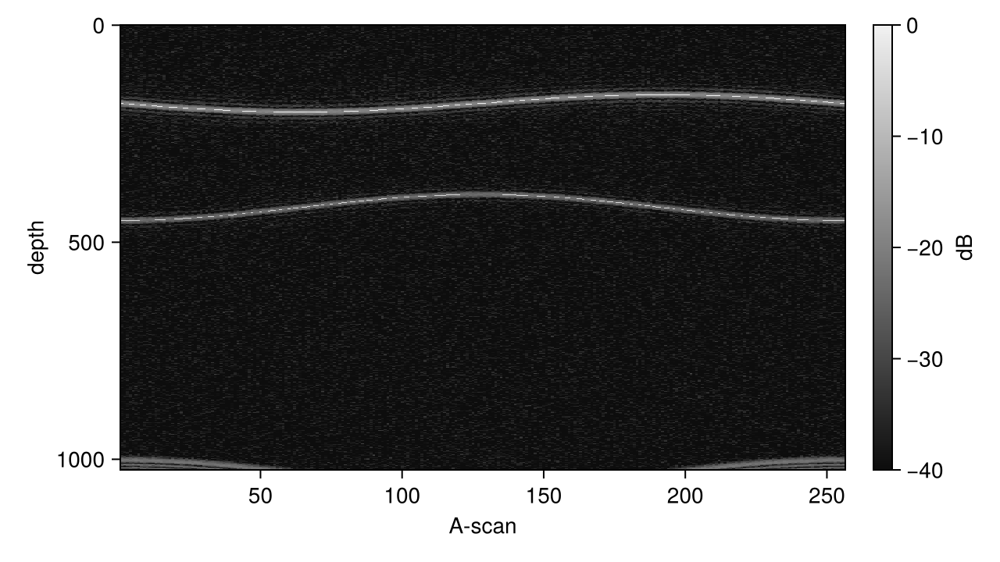

Real Data
This guide shows how to transform real values at the nodes with plan_rnfft, the NFFT counterpart of FFTW's rfft/brfft. Real values at the nodes mean Hermitian coefficients, and the plan works with the half $n_1 = 0, \dots, \lfloor N_1/2 \rfloor$ of them (definition in Mathematical Background, implementation in How NFFT.jl Works).
For an array of logical size $\bm{N}$ the input of the plan has size $(\lfloor N_1/2 \rfloor + 1, N_2, \dots)$; the other dimensions are indexed as in plan_nfft. The direct transform returns real values, the adjoint takes real values. The two are adjoint with respect to the real inner product, so they can be used in iterative solvers.
Reconstruct OCT depth profiles
In spectral-domain OCT, each A-scan is a real interferogram sampled at wavenumbers that are not equidistant; the depth profile is its Fourier transform. With dims = 1 one plan reconstructs all A-scans at once. A synthetic B-scan with two reflecting layers:
using NFFT, LinearAlgebra, Random, CairoMakie
Random.seed!(1)
J, Nz, L = 2048, 1024, 256 # samples per A-scan, depth, A-scans
k = reshape(sort(0.45 .* sin.(range(-π / 2, π / 2; length=J))), 1, J) # non-linear in k
depth(l) = (180 + round(Int, 20sin(2π * l / L)), 420 + round(Int, 30cos(2π * l / L)))
y = zeros(J, L)
for l in 1:L, (z, a) in zip(depth(l), (1.0, 0.6))
y[:, l] .+= a .* cospi.(2z .* k[1, :])
end
y .+= 0.2 .* randn(J, L)2048×256 Matrix{Float64}:
0.412387 -1.64756 -1.85114 … -1.34529 0.250488 0.671186
0.455682 -1.71167 -1.79482 -1.43751 0.301409 0.367789
0.280843 -1.4352 -1.26304 -1.2421 0.456857 0.605467
0.409372 -1.37064 -1.42736 -1.33699 0.0826031 0.294426
0.617285 -1.13178 -1.81106 -1.4508 -0.0616679 0.496799
0.0849957 -1.34479 -1.77687 … -1.55691 0.653185 0.621613
0.435828 -1.64793 -1.65832 -1.49115 0.652055 0.243922
0.574261 -1.31171 -1.64193 -1.4526 0.298925 0.496229
-0.156035 -1.47101 -1.39264 -1.85745 0.35623 0.295452
0.0248325 -1.80818 -1.7511 -1.17618 0.113407 0.30618
⋮ ⋱ ⋮
0.679569 -1.86003 -1.6504 -1.41223 0.522395 0.294318
0.486614 -1.54224 -1.46935 … -1.6947 0.153853 0.469989
0.461282 -1.82101 -1.39765 -1.55561 0.457367 0.239671
0.493735 -1.34551 -1.67179 -1.54374 0.561056 0.44087
0.638923 -1.68852 -1.52832 -1.34948 0.478463 0.393733
0.448934 -1.40968 -1.50986 -1.55543 0.864329 0.494264
0.533523 -1.26084 -1.50699 … -1.8455 0.458042 0.68596
0.466258 -1.83753 -1.3666 -1.5649 0.576231 0.395772
0.504592 -1.63918 -1.32497 -1.32456 0.519996 0.0372952The depth profiles are the adjoint applied to the interferograms, weighted with the spacing of the wavenumbers (a simple density compensation):
p = plan_rnfft(k, (2Nz, L); dims=1)
w = [k[2] - k[1]; (k[3:end] .- k[1:end-2]) ./ 2; k[end] - k[end-1]]
h = adjoint(p) * (w .* y) # depth profiles, n = 0 … Nz
size(h)(1025, 256)dB = 20log10.(abs.(h) ./ maximum(abs, h))
fig = Figure(size=(640, 360))
ax = Axis(fig[1, 1]; xlabel="A-scan", ylabel="depth", yreversed=true)
hm = heatmap!(ax, 1:L, 0:Nz, dB'; colormap=:grays, colorrange=(-40, 0))
Colorbar(fig[1, 2], hm; label="dB")
fig
With several threads, the plan runs the 256 A-scans in parallel:
t = minimum(@elapsed(mul!(h, adjoint(p), w .* y)) for _ in 1:5)
(ms=1e3t, threads=Threads.nthreads())(ms = 3.15377, threads = 4)Check the result
Against the direct evaluation of the definition:
N = (64, 48)
kr = rand(2, 500) .- 0.5
pr = plan_rnfft(kr, N)
hr = randn(ComplexF64, size_in(pr))
modes(I) = (I[1] - 1, I[2] - 1 - N[2] ÷ 2)
ref = [sum(real(hr[I] * cispi(-2 * sum(modes(I) .* Tuple(kr[:, j])))) for I in CartesianIndices(hr)) for j in 1:500]
norm(pr * hr - ref) / norm(ref), accuracy(pr)(3.298074359680977e-9, 5.747818323944175e-9)This page was generated using Literate.jl.